Common Problems
Real-time Updates
Understanding the Problem
🚗 What is Whatsapp?
Whatsapp is a messaging service that allows users to send and receive encrypted messages and calls from their phones and computers. Whatsapp is famously built on Erlang and renowned for handling high scale with limited engineering and infrastructure outlay.
Functional Requirements
Apps like WhatsApp and Messenger have tons of features, but your interviewer doesn't want you to cover them all. The most obvious capabilities are almost definitely in-scope but it's good to ask your interviewer if they want you to move beyond. Spending too much time in requirements will make it harder for you to give detail in the rest of the interview, so we won't dawdle too long here!
Core Requirements
- Users should be able to start group chats with multiple participants (limit 100).
- Users should be able to send/receive messages.
- Users should be able to receive messages sent while they are not online (up to 30 days).
- Users should be able to send/receive media in their messages.
That third requirement isn't obvious to everyone (but it's interesting to design) and If I'm your interviewer I'll probably guide you to it.
Below the line (out of scope)
- Audio/Video calling.
- Interactions with businesses.
- Registration and profile management.

Non-Functional Requirements
Before getting into non-functional requirements, it might make sense to ask your interviewer how the app is used by the majority of users if you haven't used it much. Are users mostly doing 1:1 chats, or is the app for large groups? How often are people sending messages? These questions will help you to understand the system that needs to be built and while they are not explicitly "requirements" they will dictate some design decisions that come later.
Core Requirements
- Messages should be delivered to available users with low latency, < 500ms.
- We should guarantee deliverability of messages - they should make their way to users.
- The system should be able to handle billions of users with high throughput (we'll estimate later).
- Messages should be stored on centralized servers no longer than necessary.
- The system should be resilient against failures of individual components.
Below the line (out of scope)
- Exhaustive treatment of security concerns.
- Spam and scraping prevention systems.
Adding features that are out of scope is a "nice to have". It shows product thinking and gives your interviewer a chance to help you reprioritize based on what they want to see in the interview. That said, it's very much a nice to have. If additional features are not coming to you quickly (or you've already burned some time), don't waste your time and move on. It's easy to use precious time defining features that are out of scope, which provides negligible value for a hiring decision.
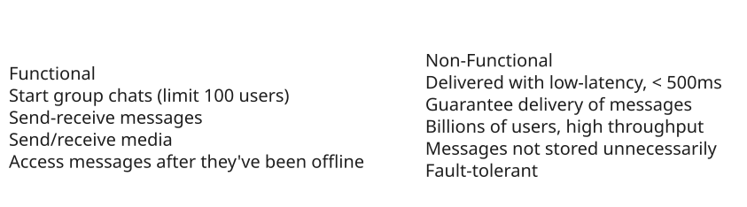
Requirements
The Set Up
Planning the Approach
Before you move on to designing the system, it's important to start by taking a moment to plan your strategy for the session. For this problem, we might first recognize that 1:1 messages are simply a special case of larger chats (with 2 participants), so we'll solve for that general case of group messages even while we focus on the 1:1 case. We can also reflect a little and acknowledge that part of the design will be able durably delivering messages to users, and another is about doing so in realtime.
After this, we should be able to start our design by walking through our core requirements and solving them as simply as possible. This will get us started with a system that is probably slow and not scalable, but a good starting point for us to optimize in the deep dives.
In our deep dives we'll address scaling, optimizations, and any additional features/functionality the interviewer might want to throw on the fire.
Defining the Core Entities
In the core entities section, we'll think through the main "nouns" of our system. The intent here is to give us the right language to reason through the problem and set the stage for our API and data model.
Interviewers aren't evaluating you on what you list for core entitites, they're an intermediate step to help you reason through the problem. That doesn't mean they don't matter though! Getting the entities wrong is a great way to start building on a broken foundation - so spend a few moments to get them right and keep moving.
We can walk through our functional requirements to get an idea of what the core entities are. We need:
- Users
- Chats (2-100 users)
- Messages
- Clients (a user might have multiple devices)
We'll use this language to reason through the problem.
API or System Interface
Next, we'll want to think through the API of our system. Unlike a lot of other products where a REST API is probably appropriate, for a chat app, we're going to have high-frequency updates being both sent and received. This is a perfect use case for a bi-directional socket connection!
Pattern: Real-time Updates
WebSocket connections and real-time messaging demonstrate the broader real-time updates pattern used across many distributed systems. Whether it's chat messages, live dashboards, collaborative editing, or gaming, the same principles apply: persistent connections for low latency, pub/sub for scaling across servers, and careful state management for reliability.
For this interview, we'll use WebSockets (over TLS for security), although a custom protocol over a raw TLS-encrypted TCP connection would also work. The idea will be that users will open the app and connect to the server, opening this socket which will be used to send and receive commands which represent our API.
As we define our API, we'll specify the commands that are sent and received over the connection by the client.
First, let's be able to create a chat.
// -> createChat
{
"participants": [],
"name": ""
} -> {
"chatId": ""
}Now we should be able to send messages on the chat.
// -> sendMessage
{
"chatId": "",
"message": "",
"attachments": []
} -> {
"status": "SUCCESS" | "FAILURE",
"messageId": ""
}We need a way to create attachments (note: I'm going to amend this later in the writeup).
// -> createAttachment
{
"body": ...,
"hash":
} -> {
"attachmentId": ""
}And we need a way to add/remove users to the chat.
// -> modifyChatParticipants
{
"chatId": "",
"userId": "",
"operation": "ADD" | "REMOVE"
} -> "SUCCESS" | "FAILURE"Each of these commands will have parallel commands that are sent to other clients. When the command has been received by clients, they'll send an ack command back to the server letting it know the command has been received (and it doesn't have to be sent again)!
The message receipt acknowledgement is a bit non-obvious but crucial to making sure we don't lose messages. By forcing clients to ack, we can know for certain that the message has been delivered all the way to the client.
When a chat is created or updated ...
// <- chatUpdate
{
"chatId": "",
"participants": [],
} -> "RECEIVED"When a message is received ...
// <- newMessage
{
"chatId": "",
"userId": ""
"message": "",
"attachments": []
} -> "RECEIVED"Etc ...
Note that enumerating all of these APIs can take time! In the actual interview, I might shortcut by only writing the command names and not the full API. It's also usually a good idea to summarize the API initially before you build out the high-level design in case things need to change. "I'll come back to this as I learn more" is completely acceptable!
Our whiteboard might look like this:
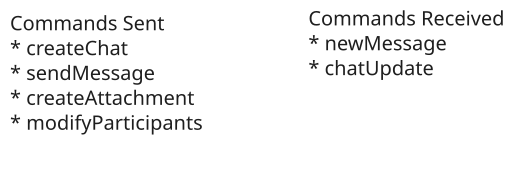
Commands Exchanged
Now that we have a base to work with let's figure out how we can implement them while we satisfy our requirements.
High-Level Design
1) Users should be able to start group chats with multiple participants (limit 100)
For our first requirement, we need a way for a user to create a chat. We'll start with a simple service behind an L4 load balancer (we're using Websockets) which can write Chat metadata to a database. Let's use DynamoDB for fast key/value performance and scalability here, although we have lots of other options.
Can we use an L7 load balancer? In many cases, yes. There is wide support for Websockets in many modern L7 load balancers. But the important thing is that we don't need any L7 capabilities for this service. L7 load balancers shine when we want to, for instance, route traffic with specific paths or headers to different services. They are also helpful when we may want to spread HTTP requests across many servers even behind a single client connection. But neither of these apply here!
So using an L4 load balancer is sufficient and will generally be higher performance than a L7 load balancer.
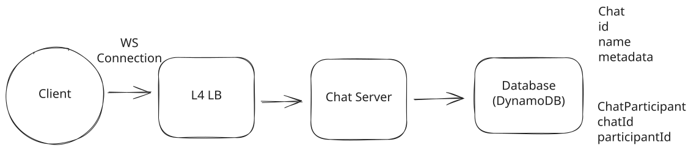
Create a Chat
The steps here are:
- User connects to the service and sends a createChat message.
- The service creates a Chat record in the database along with a ChatParticipant record for each user in the chat. For small chats this can be done in a single DynamoDB transaction (up to 100 items), but for chats near the 100-participant limit we may need to batch the writes.
- The service returns the chatId to the user.
On the chat table, we'll usually just want to look up the details by the chat's ID. Having a simple primary key on the chat id is good enough for this.
For the ChatParticipant table, we'll want to be able to (1) look up all participants for a given chat and (2) look up all chats for a given user.
- We can do this with a composite primary key where chatId is the partition key and participantId is the sort key. A Query on the chatId partition key will return all participants for a given chat.
- We'll need a Global Secondary Index (GSI) with participantId as the partition key and chatId as the sort key. This will allow us to efficiently query all chats for a given user. The GSI will automatically be kept in sync with the base table by DynamoDB.
Great! We got some chats. How about messages?
2) Users should be able to send/receive messages.
To allow users to send/receive messages, we're going to need to start taking advantage of the websocket connection that we established. To keep things simple while we get off the ground, let's assume we have a single host for our Chat Server.
This is obviously a terrible solution for scale (and you might say so to your interviewer to keep them from itching), but it's a good starting point that will allow us to incrementally solve those problems as we go.
For infrastructure-style interviews, I highly recommend reasoning about a solution on a single node first. Oftentimes the path to scale is straightforward from there.
If you solve scale first without thinking about how the actual mechanics of your solution work underneath, you're more likely to back yourself into a corner.
When users make Websocket connections to our Chat Server, we'll want to keep track of their connection with a simple in-memory hash map which will map a user id to a websocket connection. This way we know which users are connected and can send them messages.
To send a message:
- User sends a sendMessage message to the Chat Server.
- The Chat Server looks up all participants in the chat via the ChatParticipant table.
- The Chat Server looks up the websocket connection for each participant in its internal hash table and sends the message via each connection.
We're making some really strong assumptions here! We're assuming all users are online, connected to the same Chat Server, and that we have a websocket connection for each of them. But under those conditions this works! So let's keep going.
3) Users should be able to receive messages sent while they are not online (up to 30 days).
With our next requirement, we're going to need to start storing messages in our database so that we can deliver them to users even when they're offline. We'll take this as an opportunity to add some robustness to our system.
Let's keep an "Inbox" for each user which will contain all undelivered messages. When messages are sent, we'll write them to the inbox of each recipient user. If they're already online, we can go ahead and try to deliver the message immediately. If they're not online, we'll store the message and wait for them to come back later.
How much write throughput does this add? The vast majority of chats are 1:1, and the average user sends about 20 messages per day. With 200M active users, that's 4B messages/day or roughly 40K messages/second. For each message in a 1:1 chat, we write once to Messages and once to Inbox (for the recipient). Even accounting for group chats, we're looking at roughly 100K writes/second — well within DynamoDB's capabilities with userId as the partition key.
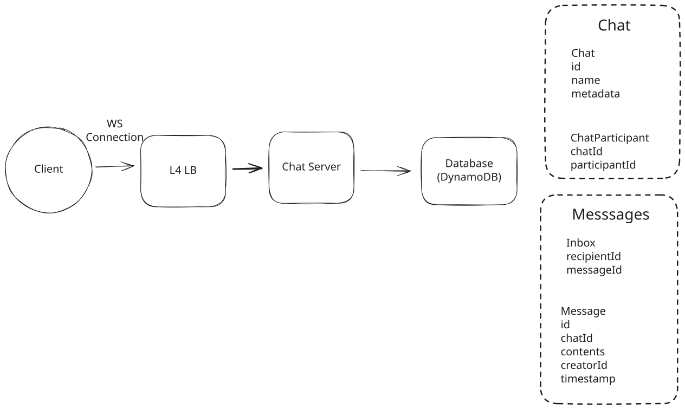
Send a Message
So, to send a message:
- Sender sends a sendMessage message to the Chat Server.
- The Chat Server looks up all participants in the chat via the ChatParticipant table.
- The Chat Server (a) writes the message to our Message table and (b) creates an entry in our Inbox table for each recipient.
- The Chat Server returns a SUCCESS or FAILURE to the sender with the final message id.
- The Chat Server looks up the websocket connection for each participant and attempts to deliver the message to each of them via newMessage.
- (For connected clients) Upon receipt, the client will send an ack message to the Chat Server to indicate they've received the message. The Chat Server will then delete the message from the Inbox table.
For clients who aren't connected, we'll keep their messages in the Inbox table for some time. Later, when the client decides to connect, we'll:
- Look up the user's Inbox and find any undelivered message IDs.
- For each message ID, look up the message in the Message table.
- Write those messages to the client's connection via the newMessage message.
- Upon receipt, the client will send an ack message to the Chat Server to indicate they've received the message.
- The Chat Server will then delete the message from the Inbox table.
Finally, we'll need to periodically clean up the old messages in the Inbox and messages tables. We can do this by setting a TTL on the items of the tables.
Great! We knocked out some of the durability issues of our initial solution and enabled offline delivery. Our solution still doesn't scale and we've got a lot more work to do, so let's keep moving.
4) Users should be able to send/receive media in their messages.
Our final requirement is that users should be able to send/receive media in their messages.
Users sending and receiving media is annoying. It's bandwidth- and storage- intensive. While we could potentially do this with our Chat Server and database, it's better to use purpose-built technologies for this. This is in fact how Whatsapp actually works: attachments are uploaded via a separate HTTP service.
Approach
The worst approach is to have the Chat Server accept the attachment media over our websocket connection and save it in our database. Then we'll need to add an additional message type for users to retrieve attachments.
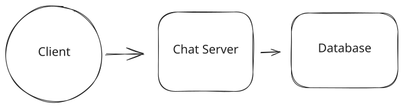
Attachments in DB
Challenges
This is not a good solution. First, most databases (including DynamoDB) aren't optimized for handling large binary blobs. Second, we're crippling the bandwidth available to our Chat Servers by occupying them with comparitively dumb storage and retrieval. There are better solutions!
Approach
A straightforward approach is to have the Chat Server accept the attachment media, then push it off to blob storage with a TTL of 30 days (remember we don't need to keep messages forever!).
Users who want to retrieve a particular attachment can then query the blob storage directly (via a pre-signed URL for authorization). Ideally, we'd find a way to expire the media once it had been received by all recipients. While we could put a CDN in front of our blob storage, since we're capped at 100 participants the cache benefits are going to be relatively small.
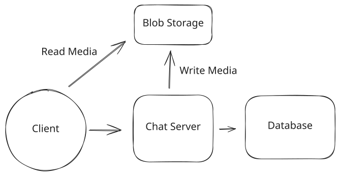
Use Blob Storage
Challenges
Unfortunately, our Chat Servers still have to handle the incoming media and forward it to the blob storage (a wasted step). Expiring attachments once they've been downloaded by all recipients isn't handled. Managing encryption and security will require extra steps.
Approach
An ideal approach is that we give our users permission (e.g. via pre-signed URLs) to upload directly to the blob storage. As an example, they might send a getAttachmentTarget message to the Chat Server which returns a pre-signed URL. Once uploaded, the user will have a URL for the attachment which they can send to the Chat Server as an opaque URL.
Then, our solution works much like the "Good" solution. Users who want to retrieve a particular attachment can then query the blob storage directly (via a pre-signed URL for authorization). Ideally, we'd find a way to expire the media once it had been received by all recipients. While we could put a CDN in front of our blob storage, since we're capped at 100 participants the cache benefits are going to be relatively small.
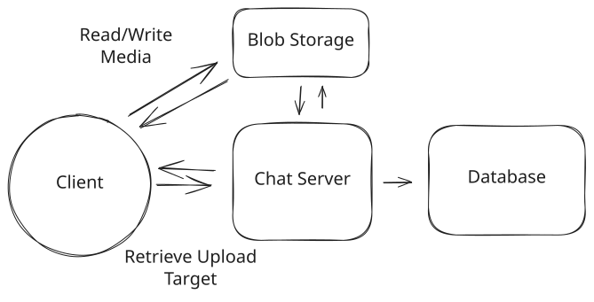
Use Presigned URLs
Challenges
Expiring attachments once they've been downloaded by all recipients isn't handled. Managing encryption and security will require extra steps.
Ok awesome, so we have a system which has real-time delivery of messages, persistence to handle offline use-cases, and attachments. It just doesn't scale ... yet!
Potential Deep Dives
With the core functional requirements met, it's time to dig into the non-functional requirements via deep dives and solve some of the issues we've earmarked to this point. This includes solving obvious scalability issues as well as auxiliary questions which demonstrate your command of system design.
The degree to which a candidate should proactively lead the deep dives is a function of their seniority. In this problem, all levels should be quick to point out that my single-host solution isn't going to scale. But beyond these bottlenecks, it's reasonable in a mid-level interview for the interviewer to drive the majority of the deep dives. However, in senior and staff+ interviews, the level of agency and ownership expected of the candidate increases. They should be able to proactively look around corners and identify potential issues with their design, proposing solutions to address them.
1) How can we handle billions of simultaneous users?
Our single-host system is convenient but unrealistic. Serving billions of users via a single machine isn't possible and it would make deployments and failures a nightmare. So what can we do? The obvious answer is to try to scale out the number of Chat Servers we have.
If we have 1b users, we might expect 200m of them to be connected at any one time. Whatsapp famously served 1-2m users per host, but this will require us to have hundreds of chat servers. That's a lot of simultaneous connections (!).
Note that I've included some back-of-the-envelope calculations here. Your interviewer will likely expect them, but you'll get more mileage from your calculations by doing them just-in-time: when you need to figure out a scaling bottleneck.
Adding more chat servers also introduces some new problems: now the sending and receiving users might be connected to different hosts. If User A is trying to send a message to User B and C via Chat Server 1, but User C is connected to Chat Server 2, we're going to have a problem.
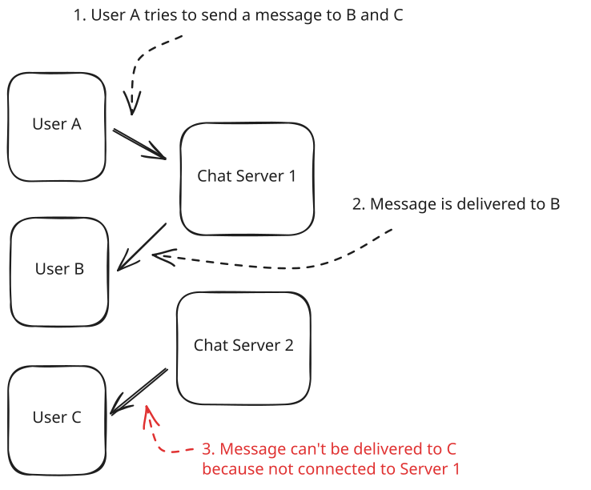
Host Confusion
The issue is one of of routing: we need to route messages to the right Chat Servers in order to deliver them. We have a few options here which are discussed in greatest depth in the Realtime Updates Deep Dive.
Approach
The most naive (broken) solution is to put a load balancer in front of our Chat Servers and scale horizontally. Just add some hosts!
Challenges
The problem is this won't work. A given server might accept a message to be sent to a Chat, but we're no longer guaranteed it will have the connections to each of the clients who needs to receive it. We won't be able to deliver the events and messages!
Don't be tempted to do this in an interview!
Approach
Many candidates instinctively reach for a queue or stream in order to solve the scaling problem. One example solution would be to create a Kafka topic for every user in the system. The idea here would be that we could keep our Inbox table as a Kafka topic. Then our Chat Servers will subscribe to the topic and deliver messages to the user.
Under this proposal, when a user connects to our Chat Server, they'd subscribe to the topic for their user ID. When we need to send a message to a given user we'd publish the message to the topic for that user. This message would be received by all the chat servers that have subscribed to that topic, and then the message could be passed on to the websocket connection for that user.
Challenges
This unfortunately doesn't work - Kafka is not built for billions of topics and carries significant overhead for each one (order of 50kb per topic, so 50tb+ of storage for 1b users).
There are potential fixes that you might conceive, like creating "super topics" which group together all of the users on a given Chat Server, but you'll quickly find yourself reinventing the good aspects for alternative solutions below with little of the benefit.
Approach
Another approach for us to use is to always assign users to a specific Chat Server based on their user ID. If we do this correctly, we'll always know which Chat Server is responsible for a given user so, when we need to send them messages, we can do so directly.
To do this we'll need to keep a central registry of how many Chat Servers we have, their addresses, and the which segments of a consistent hash space they own. We might use a service like ZooKeeper or Etcd to do this.
When a request comes in, we'll connect them to the Chat Server they are assigned to based on their user id. When a new event is created, Chat Servers will connect directly with the Chat Server that "owns" that user id, then call an API which delivers a notification the connected user (if they're connected).
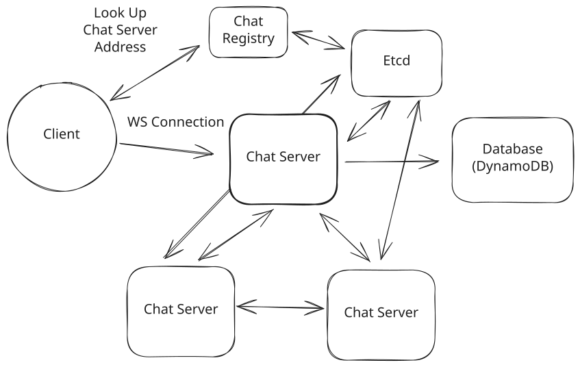
Consistently Hashed Chat Servers
Challenges
Each Chat Server will need to maintain connections with each other Chat Server which will require that we keep our Chat Servers big in size and small in number.
Increasing the number of Chat Servers requires careful orchestration of dropping connections so that users reconnect to other servers without triggering a thundering herd (we need to be able to support users moving between servers). During scaling we need to ensure that events are sent to both servers to prevent dropping messages.
All of these are solvable problems but your interviewer will expect you to talk about them and how to pull it off. I'm rating this "Good" rather than "Great" because it creates a lot of problems you'll need to solve, but if you've read through our Realtime Updates deep dive and feel prepared to talk about them, go for it!
Approach
The last approach is to use a purpose-built system for the bouncing messages between servers.
Redis Pub/Sub is a good example which uses a very lightweight hashmap of socket connections to allow you to ferry messages to arbitrary destinations. With Pub/Sub you can create a subscription for a given user ID and then publish messages to that subscription which are received "at most once" by the subscribers.
The difference here with Kafka is that Pub/Sub is not managing storage of messages. Kafka requires significant disk-based overhead per topic (in addition to the messages themselves) since it persists messages to disk and maintains consumer offsets. Redis Pub/Sub channels are much lighter — they're essentially in-memory pointers to subscriber connections with no message persistence. That said, we wouldn't run all our pub/sub through a single Redis instance. In practice, we'd shard across a cluster of Redis instances (partitioning channels by user ID), with each instance handling a fraction of the total channels.
On connection:
- When users connect to our Chat Server, that server will connect to Pub/Sub to subscribe to the topic for that user ID.
- Any messages received on that subscription are then forwarded on to the websocket connection for that user.
When a message needs to be sent:
- We publish the message to the Pub/Sub topic for the relevant user ID.
- The message is received by all subscribing Chat Servers.
- Those Chat Servers then forward the message to the user's websocket connection.
Pub/Sub is "at most once" which means it doesn't guarantee delivery. If there's no subscribers listening or Redis has a transient failure, that message is lost.
This is acceptable because we write to the Inbox and Message tables before publishing to Pub/Sub. The write path is:
- Write message to Message table + create Inbox entries (durable)
- Return success to sender
- Publish to Pub/Sub for real-time delivery (best-effort)
If step 3 fails, the message is still durably stored. Recipients will receive it when they reconnect (via the Inbox sync described above) or through periodic polling for connected clients that missed a pub/sub message.
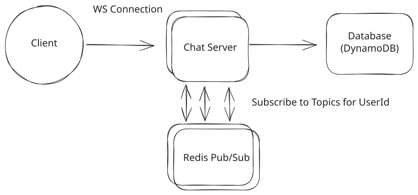
Redis Pub/Sub
Note: Some readers are concerned about the scalability of Pub/Sub. Beyond the memory constraints (we spoke about those earlier, we don't need much memory!), can we really handle the number of messages? Canva has a nice benchmark of this where they supported 100,000 mouse position updates per second on a single Redis host with 27% utilization! Remember that the Pub/Sub is really dumb and just passing messages, so it can be very efficient and scalable!
Challenges
The Pub/Sub implementation introduces additional latency because we need to ferry messages via Redis. This is small (single-digit milliseconds) but it's still a cost.
We also have connections required between each Chat Server and each Redis cluster server. This is surmountable because the number of instances we'll need is relatively small.
Should we partition by chat or by user?
You may have the idea: "why do we have the pub/sub topics/channels be per user rather than per chat?", or maybe your interviewer asks you about this! The right choice is going to depend on (a) the number of chats per user, and (b) the size of those chats. Let's consider two scenarios to make this clear:
- If we partition by chat the total number of channels in the system is 125 per user (250 chats / 2 since each chat is shared). But each chat server still needs to subscribe to 250 channels per connected user (one for each of that user's chats). When a message is sent, the server publishes to just 1 channel.
- If we partition by user there's 1 channel per user. Each chat server subscribes to 1 channel per connected user. When a message is sent, the server publishes to 1 channel (the recipient's).
In this scenario it should be obvious we prefer to partition by user — 1 subscription per user instead of 250.
- If we partition by chat the total number of channels is 1 per 100 users (since all 100 share a single chat channel). Each chat server subscribes to 1 channel per connected user. When a message is sent, the server publishes to just 1 channel.
- If we partition by user there's 1 channel per user. Each chat server subscribes to 1 channel per connected user. When a message is sent, the server has to publish to 99 channels (one for each other participant).
In this scenario, we save on the number of publishes by having channels partitioned by chat.
So which is right for this problem? Whatsapp is dominated by 1:1 chats. Having hundreds of redundant channels stresses Redis for little benefit. We also explicitly put a limit on the number of participants per chat to 100.
For more senior candidates you might be asked to discuss additional efficiencies you can eke out here. This is an example of a "celebrity problem" where an uncommon edge case (large chats) is disproportionately impacting the system. If this is a problem you want to solve, a good solution is to adaptively change the partitioning strategy based on the size of the chat.
When users connect, we'll list out all the chats they are part of which are larger than some threshold (say, 25 users). They'll subscribe to channels for those chats specifically in addition to the user-level channels. When a message is sent, if the chat is larger than the threshold, we'll publish to the chat-level channel instead of the user-level channel. There's edge cases here: you need to be careful that you give time for the chat servers to subscribe when the chat size changes, so you might be publishing to both channels for a short time.
2) What do we do to handle multiple clients for a given user?
To this point we've assumed a user has a single device, but many users have multiple devices: a phone, a tablet, a desktop or laptop - maybe even a work computer. Imagine my phone had received the latest message but my laptop was off. When I wake it up, I want to make sure that all of the latest messages are delivered to my laptop so that it's in sync. We can no longer rely on the user-level "Inbox" table to keep track of delivery!
Having multiple clients/devices introduces some new problems:
- First, we'll need to add a way for our design to resolve a user to 1 or more clients that may be active at any one time.
- Second, we need a way to deactivate clients so that we're not unnecessarily storing messages for a client which does not exist any longer.
- Lastly, we need to update our message delivery system so that it can handle multiple clients.
Let's see if we can account for this with minimal changes to our design.
- We'll need to create a new Clients table to keep track of clients by user id.
- When we look up participants for a chat, we'll need to look up all of the clients for that user.
- We'll need to update our Inbox table to be per-client rather than per-user.
- When we send a message, we'll need to send it to all of the clients for that user.
- On the pub/sub side, nothing needs to change. Chat servers will continue to subscribe to a topic with the userId.
We'll probably want to introduce some limits (3 clients per account) to avoid blowing up our storage and throughput.
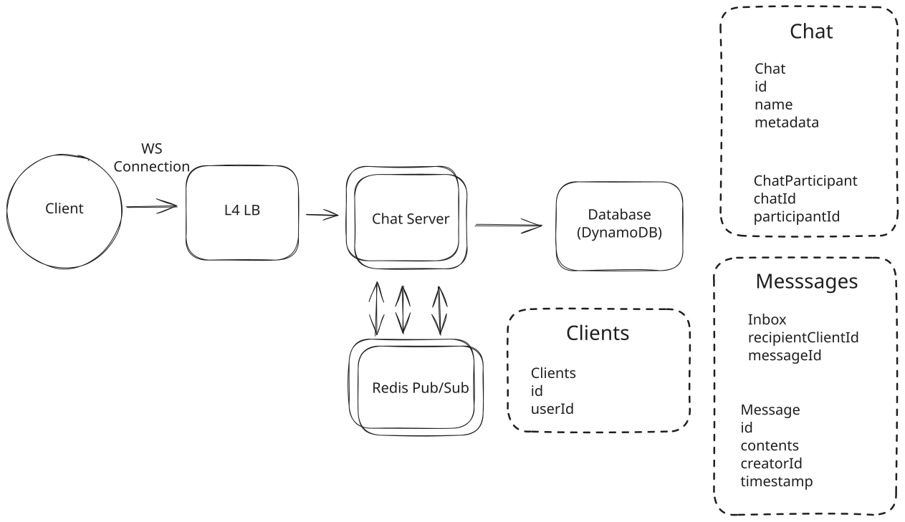
Adding clients
3) What happens if the WebSocket connection fails?
Users often sit on poor network connections. The WebSocket may technically be open, but the connection is functionally severed—we won't know until we try to send a message and it times out. TCP keepalives can take minutes to detect a dead connection, which is far too slow for a chat app. How can we make sure our users aren't impacted?
Approach
Do nothing special. When the connection dies, TCP will eventually time out and the socket will close. The client will reconnect and sync from the Inbox.
Challenges
TCP keepalives are slow—often configured for minutes, not seconds. Users could be staring at a "connected" app that's actually dead, missing messages the whole time. Not acceptable for a real-time chat app.
Approach
When Chat Server delivers a message over the WebSocket, it waits for an ACK from the client. If no ACK arrives within a short timeout (say, 500-2000ms), the server retries delivery. After a few failed retries, the server assumes the WebSocket is broken and closes it, forcing the client to reconnect and sync from the Inbox.
This pairs naturally with our existing client ACK mechanism (used to clear the Inbox). We're just adding a server-side timeout to detect when the WebSocket has silently failed.
Challenges
This only detects failures when we're actively trying to send messages. If the connection dies during a quiet period, we won't notice until the next message arrives.
Approach
The Chat Server sends periodic ping messages (every 10-30 seconds) over the WebSocket. The client must respond with a pong within a timeout (say, 5 seconds). If the client doesn't respond, the server closes the connection.
When the connection closes, the client reconnects and syncs any missed messages from the Inbox. This catches dead connections within seconds rather than minutes.
Challenges
Heartbeats add overhead—with 200M connected users and a 10-second heartbeat interval, that's 20M ping/pong exchanges per second. In practice this is fine (they're tiny messages), but it's worth noting.
The heartbeats give you a guaranteed upper bound on detection time: if your heartbeat interval is 10s and timeout is 5s, you'll detect any dead connection within 15 seconds.
4) What happens if Redis fails to deliver a message?
Redis Pub/Sub is "at most once"—if there's no subscriber listening or Redis has a transient failure, the message is lost. We've already handled durability by writing to the Inbox before publishing to Pub/Sub (importantly this means all messages will eventually get delivered), but how do we ensure connected clients quickly receive messages that Pub/Sub dropped?
Approach
Connected clients periodically poll the server for missed messages. Every 30-60 seconds, the client sends a "sync" request. The server checks the Inbox table for any undelivered messages and sends them down.
Challenges
This adds load proportional to connected users. With 200M connected users polling every 30 seconds, that's ~7M queries/second just for sync checks. You can mitigate with longer intervals, but you're trading latency for load.
The approach is "good enough" for most cases—the polling interval is a tunable knob.
Approach
Each message gets a monotonically increasing sequence number per chat. Clients track the last sequence number they've seen. If they receive message #5 but last saw #3, they know they missed #4 and request a re-sync. We can generate these sequence numbers in a separate Redis instance with simple INCR (atomic increment) commands.
Challenges
Gap detection only works when you do receive a message. If the chat goes quiet after the missed message, you won't detect the gap until the next message arrives. You still need polling as a backstop.
Approach
Combine heartbeats (from the previous section) with sequence numbers:
-
Global sequence per user: Maintain a single incrementing counter per user. Every message to that user increments their sequence.
-
Include sequence in heartbeat: When the server sends a heartbeat ping, include the user's current sequence number.
-
Client detects gaps: If the client's local sequence is behind the server's, it immediately requests a sync.
This gives you fast detection of missed messages (within one heartbeat interval) with minimal additional load because you're already sending heartbeats.
Challenges
The global sequence per user requires an atomic counter, which adds coordination. You can use Redis INCR commands, but it's another dependency. The benefit is that a single sequence catches all missed messages regardless of which chat they're in.
In practice, most production systems combine these strategies: heartbeats detect dead WebSocket connections, sequence numbers on to detect missed messages, and periodic polling serves as a final backstop.
5) How do we handle out-of-order messages?
The simple answer is: we don't, or at least not directly.
Out-of-order messages are a fact of life in distributed systems and engineering such that messages are processed in the exact order they were sent is actually a considerable amount of additional complexity. We'd need to have delays to ensure we have time for late messages to arrive and a re-ordering mechanism to handle them. You can see an example in our Flink deep dive where Flink's Bounded Out-Of-Orderness Watermark Strategy effectively waits for late messages to arrive before processing them.
But for apps like this, it's not how they work! Users would rather see new messages as quickly as possible than guarantee order. So what do we do?
All of the Chat Servers will sync their time over NTP (Network Time Protocol). This doesn't guarantee perfect time, but it's pretty good. When a message arrives on the Chat Server, we'll "stamp" it with the time it was received. Then, when clients retrieve messages, they'll have the timestamp that they were received by the server. When we display messages, we display them ordered by this time. Messages have a consistent ordering across all clients even if they arrive in a different order than they are displayed.
On occasion, this will mean a message will pop-in "above" another message that was actually sent later. Users find this acceptable!
6) How can we handle a "last seen" functionality?
Our interviewer asks "how can we add a 'last seen' functionality to chats, which shows you when the other person was last online?"
Ideally, we want a solution that is both efficient and scalable.
Approach
The naive approach is to update a lastSeen timestamp in our database every time a user does anything: sends a message, receives a message, or responds to a heartbeat.
Challenges
This creates massive write amplification. With 200M connected users and heartbeats every 10-30 seconds, we're handling millions of writes per second just for last seen updates. Even DynamoDB would struggle with this load, and we'd be paying a fortune for writes that have minimal value.
The data is also stale immediately after writing—by the time you query it, the user may have done something else. We're paying for strong consistency we don't need.
Approach
There's two insights we can use this to our advantage.
First, when users connect to our Chat Servers, they are creating a new Websocket connection. When they disconnect (or we close the connection due to missed heartbeats), we know about it.
Second, if users are online they can tell us.
So what can we do? We'll create a new table in DynamoDB which will keep track of the last disconnect for a given user. Whenever a user disconnects from a Chat Server, we'll update this value using the current timestamp. We can use DynamoDB's conditional expressions (e.g., only update if the new timestamp is greater than the existing one) to ensure that two servers don't race each other and accidentally overwrite a more recent disconnect time.
Next, we'll have a special request we send from a client who wants to request a "last seen" a given user.
// -> getLastSeen
{
"targetUserId": "",
"requestingUserId": "",
}We'll have a corresponding update message
// -> updateLastSeen
{
"targetUserId": "",
"reporter": "DATABASE" | "SERVER",
"lastSeen": "ONLINE" | "$DATE"
}In order to get the last seen for a given user:
- The client publishes a getLastSeen message with their targetUserId and the requestingUserId.
- The Chat Server receives the message. In parallel, it will: 2a) Check the LastSeen table for the targetUserId and publish a updateLastSeen message to the Pub/Sub channel for the requestingUserId. 2b) Forward a getLastSeen message to the Pub/Sub channel for the targetUserId.
- If the target user's Chat Server receives the getLastSeen and the user is connected, it will publish an updateLastSeen message with lastSeen of "ONLINE" to the Pub/Sub channel for the requestingUserId.
- Finally, the client will merge the responses. If it receives an ONLINE message, the bubble is green. If it doesn't, it will show when the user last disconnected from the service.
This minimizes the storage required (we only need 1 record for every user) and the number of updates (we only need to update our durable storage when a user disconnects).
Challenges
It's possible for there to be some delay between the two responses for an online user. We'll need the client to be able to handle this, either by waiting a moment before displaying the result or being able to update the UI seamlessly.
We are depending on Chat Servers to report disconnect times, which can be a problem if those Chat Servers fail. Fortunately, if the servers fail and the users are still connected, they'll reconnect shortly. If we want to be more robust, we can write to the LastSeen table when the connection happens as well.
What is Expected at Each Level?
Ok, that was a lot. You may be thinking, “how much of that is actually required from me in an interview?” Let’s break it down.
Mid-level
Breadth vs. Depth: A mid-level candidate will be mostly focused on breadth (80% vs 20%). You should be able to craft a high-level design that meets the functional requirements you've defined, but many of the components will be abstractions with which you only have surface-level familiarity.
Probing the Basics: Your interviewer will spend some time probing the basics to confirm that you know what each component in your system does. For example, if you use websockets, expect that they may ask you what it does and how they work (at a high level). In short, the interviewer is not taking anything for granted with respect to your knowledge.
Mixture of Driving and Taking the Backseat: You should drive the early stages of the interview in particular, but the interviewer doesn’t expect that you are able to proactively recognize problems in your design with high precision. Because of this, it’s reasonable that they will take over and drive the later stages of the interview while probing your design.
The Bar for Whatsapp: For this question, an E4 candidate will have clearly defined the API, landed on a high-level design that is functional and meets the requirements. Their scaling solution will have rough edges but they'll have some knowledge of its flaws.
Senior
Depth of Expertise: As a senior candidate, expectations shift towards more in-depth knowledge — about 60% breadth and 40% depth. This means you should be able to go into technical details in areas where you have hands-on experience. It's crucial that you demonstrate a deep understanding of key concepts and technologies relevant to the task at hand.
Advanced System Design: You should be familiar with advanced system design principles. For example, knowing about the consistent hashing for this problem is essential. You’re also expected to understand the mechanics of long-running sockets. Your ability to navigate these advanced topics with confidence and clarity is key.
Articulating Architectural Decisions: You should be able to clearly articulate the pros and cons of different architectural choices, especially how they impact scalability, performance, and maintainability. You justify your decisions and explain the trade-offs involved in your design choices.
Problem-Solving and Proactivity: You should demonstrate strong problem-solving skills and a proactive approach. This includes anticipating potential challenges in your designs and suggesting improvements. You need to be adept at identifying and addressing bottlenecks, optimizing performance, and ensuring system reliability.
The Bar for Whatsapp: For this question, E5 candidates are expected to speed through the initial high level design so you can spend time discussing, in detail, scaling and robustness issues in the design. You should also be able to discuss the pros and cons of different architectural choices (like partitioning by chat or user), especially how they impact scalability, performance, and maintainability.
Staff+
Emphasis on Depth: As a staff+ candidate, the expectation is a deep dive into the nuances of system design — I'm looking for about 40% breadth and 60% depth in your understanding. This level is all about demonstrating that, while you may not have solved this particular problem before, you have solved enough problems in the real world to be able to confidently design a solution backed by your experience.
You should know which technologies to use, not just in theory but in practice, and be able to draw from your past experiences to explain how they’d be applied to solve specific problems effectively. The interviewer knows you know the small stuff so you can breeze through that at a high level so you have time to get into what is interesting.
High Degree of Proactivity: At this level, an exceptional degree of proactivity is expected. You should be able to identify and solve issues independently, demonstrating a strong ability to recognize and address the core challenges in system design. This involves not just responding to problems as they arise but anticipating them and implementing preemptive solutions. Your interviewer should intervene only to focus, not to steer.
Practical Application of Technology: You should be well-versed in the practical application of various technologies. Your experience should guide the conversation, showing a clear understanding of how different tools and systems can be configured in real-world scenarios to meet specific requirements.
Complex Problem-Solving and Decision-Making: Your problem-solving skills should be top-notch. This means not only being able to tackle complex technical challenges but also making informed decisions that consider various factors such as scalability, performance, reliability, and maintenance.
Advanced System Design and Scalability: Your approach to system design should be advanced, focusing on scalability and reliability, especially under high load conditions. This includes a thorough understanding of distributed systems, load balancing, caching strategies, and other advanced concepts necessary for building robust, scalable systems.
The Bar for Whatsapp: For a staff+ candidate, expectations are high regarding depth and quality of solutions, particularly for the complex scenarios discussed earlier. Great candidates are going 2 or 3 levels deep to discuss failure modes, bottlenecks, and other issues with their design. There's ample discussion to be had around fault tolerance, database optimization, regionalization and cell-based architecture and more.
References
Test Your Knowledge
Answer the question below to find your gaps.
Question 1 of 15
Which is NOT a benefit of using acknowledgment patterns in message systems?
1
Enables retry logic
2
Prevents message loss during network failures
3
Reduces server memory usage
4
Confirms message delivery to the recipient